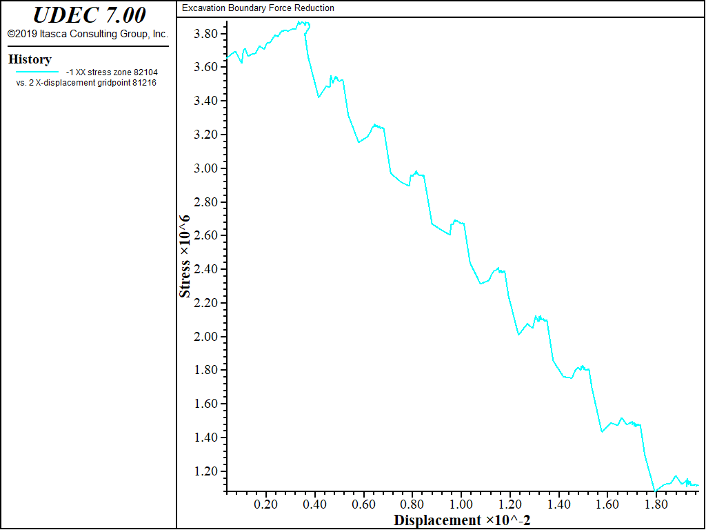

Gradual Unloading of Void Regions
The FISH function “zonk.fis” detects a void within a model, and slowly relaxes the forces around the void region. This facility is useful for simulating a gradual excavation in elasto-plastic material. The influence of transients on material failure is minimized; the solution is more “static.”
The boundary of the extracted region is detected and modified by specifying the FISH function zonk. The forces are then relaxed by specifying the function relax.
The example data file “zonk.dat” illustrates the use of “zonk.fis” to simulate a gradual excavation in Mohr-Coulomb material.
Data File: zonk.dat
model new
block tolerance corner-round-length 0.01
block create polygon -50 -30 -50 70 60 70 60 -30
block cut joint-set angle 45 0 trace 1000 0 gap 0 0 spacing 5 0
; Generate cavern
block cut crack -9.57 0 9.57 0
block cut crack -9.57 0 -9.57 28.5
block cut crack 9.57 0 9.57 28.5
block cut arc 3.25 28.5 9.57 28.5 60 6
block cut arc -3.25 28.5 -9.57 28.5 -60 6
block cut arc 0 22.871 0 35.691 30 3
block cut arc 0 22.871 0 35.691 -30 3
block cut arc 10.522 30.424 -3.66078 35.307522 29 3
block cut arc -10.522 30.424 3.66078 35.307522 -29 3
block cut crack -9.57 28 9.57 28
block cut crack -9.57 25.5 9.57 25.5
block cut crack -9.57 23.0 9.57 23.0
block cut crack -9.57 20.5 9.57 20.5
block cut crack -9.57 18.0 9.57 18.0
block cut crack -9.57 15.5 9.57 15.5
block cut crack -9.57 13.0 9.57 13.0
block cut crack -9.57 10.5 9.57 10.5
block cut crack -9.57 8.00 9.57 8.00
block cut crack -9.57 5.50 9.57 5.50
block cut crack -9.57 3.00 9.57 3.00
block cut crack -9.57 1.00 9.57 1.00
block zone gen edge 15
block change cons 3
block Prop m=1 bulk=3.9e9 shear=2.8e9 dens=2500 coh=3.45e6 ...
fric 30 dil 0 ten 1e10
block contact prop mat=1 stiffness-normal=10e9 ...
stiffness-shear=1e9 friction=40 cohesion=0.4e6 ; Crack 1
bl edg app stress -3.95e6 0 -7.89e6 range pos-y 69 71
block gridpoint apply vel-y 0 range pos-y -31 -29
block gridpoint apply vel-x 0 range pos-x -51 -49
block gridpoint apply vel-x 0 range pos-x 59 61
block mech grav 0 -10
block insitu stress -3.95e6 0 -9.5e6 gradient-y 0 0 23000
block insitu szz=-3.95e6 ;
block solve ratio 1e-4
model save 'stage0.sav'
call 'zonk.fis'
block del range pos-x -4.2 3.9 pos-y 28 35.25 ;
block del range region -9.57 28 -8.5 33 -4. 35 -3.25 28
block del range regio 3.75 28 3.5 35.5 8.5 33 9.57 28
block del range pos-x -10 10 pos-y 0 28
;
; must fix points and cycle once to get reaction forces
;
block grid apply-int velocity-x 0 velocity-y 0 ...
range pos-x -10 10 pos-y 0 37
block cycle 1
;
block zone history stress-xx 12.5 20.0
block gridpoint history disp-x 12.5 20.0
@zonk
@relax
model save 'stage1.sav'
hist name 1 label 'XX - Stress'
hist name 2 label 'X - Displacement'
ret

{kind=link}
Figure 1: Horizontal stress vs displacement at history point
| Was this helpful? ... | UDEC © 2018, Itasca | Updated: Mar 15, 2024 |